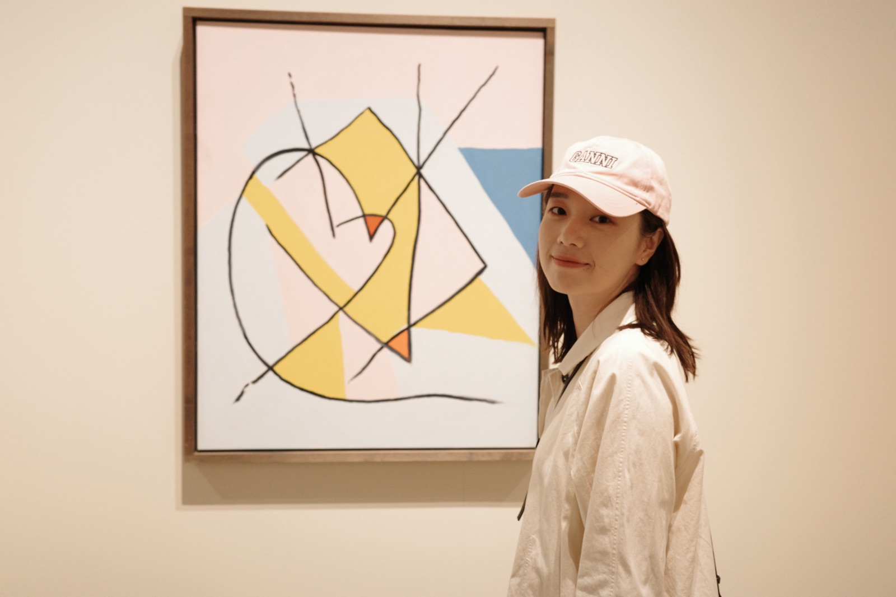

Digital Cultural Heritage · HCI · Data Behavior数字文化遗产 · 人机交互 · 数据行为
Assistant Professor
Department of Information Management · Peking University助理教授
北京大学信息管理系
Wenqi Li is an Assistant Professor in the Department of Information Management at Peking University, where she previously held a Boya Postdoctoral Fellowship. She earned her Ph.D. in Information Science from Peking University and an M.S. in Human Centered Design & Engineering from the University of Washington. Her research spans human–computer interaction, digital cultural heritage, digital humanities, data behavior, and data curation. Her recent work centers on the data behavior of humanities scholars and the research infrastructure that digital humanities depends on, together with the use of AI in preserving cultural heritage, collating ancient texts, and engaging the public. Her current projects ask how generative AI and human–AI co-creation can revitalize cultural heritage and open up new forms of experience. Her research appears in JASIST, ACM CHI, CSCW, JCDL, and the Journal of Library Science in China. Before entering academia, she spent four years as a user experience designer at Microsoft (USA) and Alibaba Cloud.李文琦，北京大学信息管理系助理教授，此前任北京大学博雅博士后。她于北京大学获情报学博士学位，并于华盛顿大学人本设计与工程系获理学硕士学位。研究领域涵盖人机交互、数字文化遗产、数字人文、数据行为与数据管护。近年来的工作聚焦人文学者的数据行为与数字人文研究基础设施，以及人工智能在文化遗产保护、古籍整理与公众参与中的应用；近期研究关注如何结合生成式 AI 与人智共创，推动文化遗产的活化与体验创新。研究成果发表于 JASIST、ACM CHI、CSCW、JCDL 及《中国图书馆学报》等期刊与会议。进入学界前，她曾在微软（美国）与阿里云担任用户体验设计师四年。
